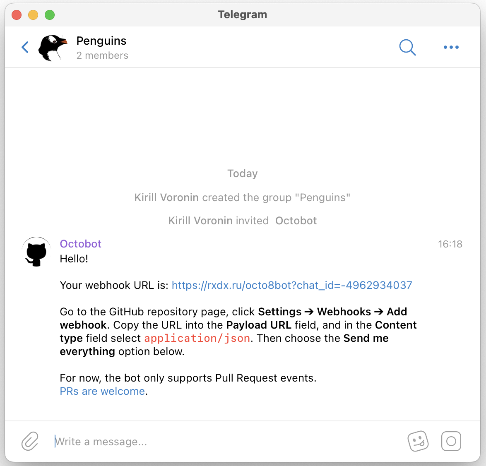
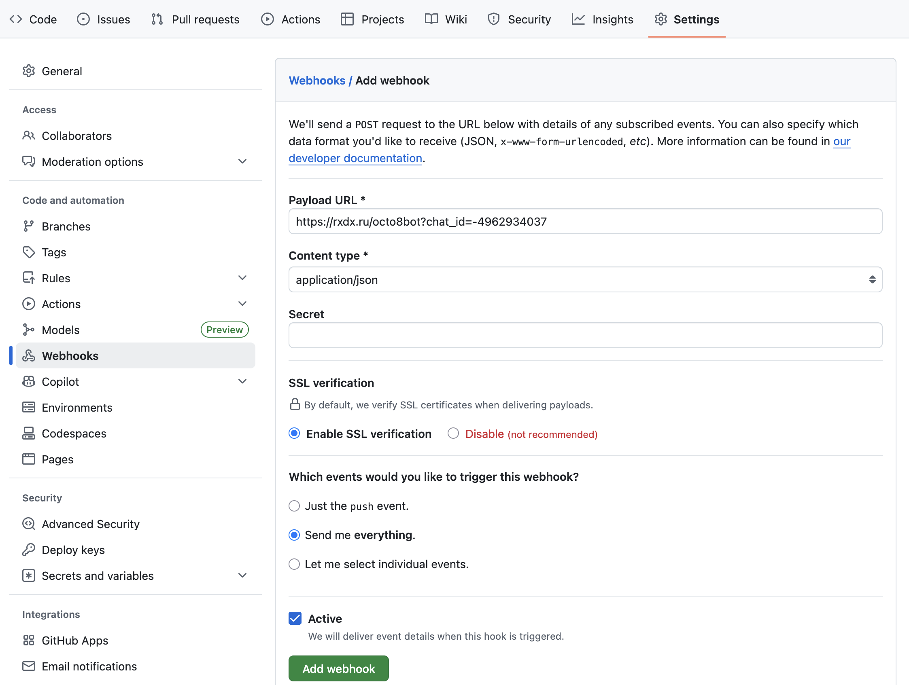

Глава 21 Webhooks
Webhooks — это механизм GitHub для реагирования на события в репозитории. Когда что-то происходит (например, кто-то сделал push или создал Pull Request), GitHub отправит информацию о событии на указанный в настройках адрес.
Для обработки событий по указанному адресу должна работать программа (веб-сервер). Многие сервисы, например Slack или Microsoft Teams, поддерживают таким образом отправку уведомлений в рабочий чат. Для Telegram можно воспользоваться ботом 1.
Добавьте бота в чат и скопируйте присланный им адрес.

Откройте репозиторий на Github и выберите Settings → Webhooks → Add webhook. Вставьте адрес в поле Payload URL и заполните форму как на скриншоте ниже. Нажмите Add webhook.

Если webhook настроен правильно, в чат придет сообщение с текстом «Successfully installed».